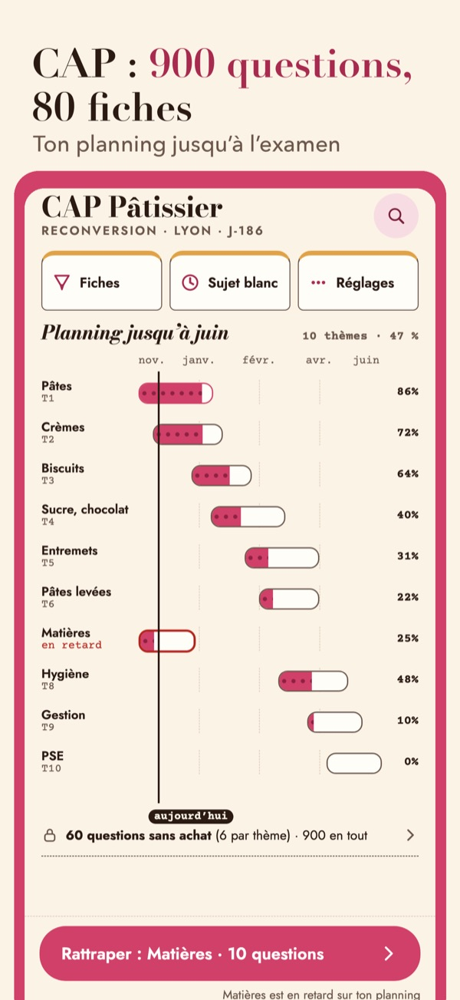
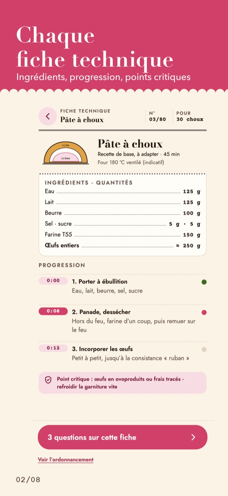
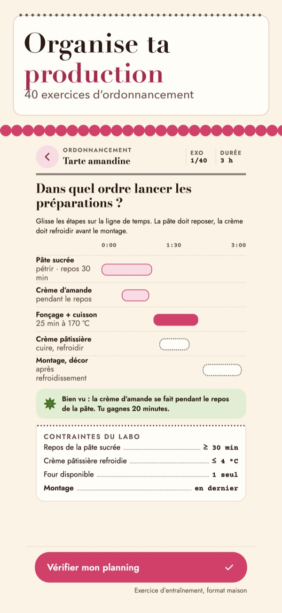

Candidat libre : QCM & fiches
Un achat unique, sans abonnement. CAP Pâtissier – Révisions t’accompagne jusqu’à l’examen, en reconversion ou en apprentissage : pâtes, crèmes, biscuits, sucre et chocolat, entremets, pâtes levées, matières premières, hygiène et HACCP, gestion, prévention. L’accueil est un planning de fabrication jusqu’à juin : chaque thème a sa fenêtre.



Bientôt sur l’App Store